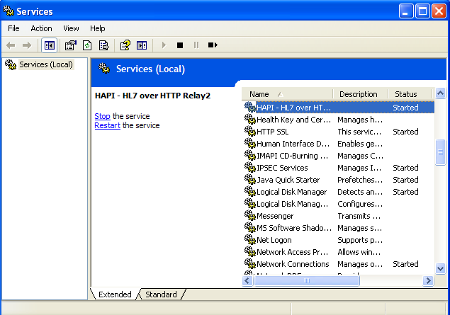

Downloading
To install the HL7 over HTTP Relay, first you should download the latest version from the HAPI download area.
Next, verify that your system has a suitable Jave Runtime Environment (JRE) installed. Open a console window and execute the following command. Note that a version of 1.5.xx or newer is required. If the following command does not work, or if a version below 1.5.xx is found, you will need to upgrade or install Java.
java version "1.7.0_05"
Java(TM) SE Runtime Environment (build 1.7.0_05-b05)
Java HotSpot(TM) 64-Bit Server VM (build 23.1-b03, mixed mode)
Next, unzip/untar the archive into an appropriate directory. Note that the application is entirely self-contained, meaning that any configuration files live entirely within the directory structure that is created when the application is unzipped. This means that it is possible to run multiple instances of the application with different configurations simply by having multiple installations in different directories.
The default installation contains configuration which listens for MLLP connections on port 8079, and relays incoming messages to the URL: http://localhost:8080/relayURI (note that the this configuration is only for demonstration purposes, and can be changed using the instructions on the next page here)
Testing It Out
On Linux/OSX systems, you can test the Relay by starting it on a console:
Running HAPI - Java HL7 API - HL7 over HTTP...
wrapper | --> Wrapper Started as Console
wrapper | Launching a JVM...
jvm 1 | 08:13:53,102 INFO [WrapperSimpleAppMain] - Starting listener on port 8079
jvm 1 | 08:13:53,103 INFO [pool-1-thread-1] - Starting ConnectionCleaner service
jvm 1 | 08:13:53,104 INFO [pool-1-thread-1] - Starting SimpleServer running on port 8079
[..snip..]
jvm 1 | 08:13:53,780 INFO [WrapperSimpleAppMain] - HAPI HL7 over HTTP Relay started in 1881 ms
Hit control-C to stop the relay.
On Windows systems, you can test the Relay by starting it on a console:
Running HAPI - Java HL7 API - HL7 over HTTP...
wrapper | --> Wrapper Started as Console
wrapper | Launching a JVM...
jvm 1 | 08:13:53,102 INFO [WrapperSimpleAppMain] - Starting listener on port 8079
jvm 1 | 08:13:53,103 INFO [pool-1-thread-1] - Starting ConnectionCleaner service
jvm 1 | 08:13:53,104 INFO [pool-1-thread-1] - Starting SimpleServer running on port 8079
[..snip..]
jvm 1 | 08:13:53,780 INFO [WrapperSimpleAppMain] - HAPI HL7 over HTTP Relay started in 1881 ms
Configuring
You may now want to visit the configuration page for more information on how to configure different listeners and transmitters. When you are satisfied with the configuration, the relay may be installed as a service/daemon on Linux or Windows.
Installing as a Windows Service
The relay may be installed the Relay as a Window Service, meaning that it will start automatically after a system reboot.
First, you should note: By default the relay will have a service name of "hl7overhttp-relay" and a service description of "HAPI - HL7 over HTTP Relay". If you want to edit this (which is particularly important if you want to have more than one instance of the Relay installed concurrently), edit the "wrapper.conf" file found in the conf directory to modify the following properties:
- wrapper.ntservice.name
- wrapper.ntservice.displayname
Next, to install the service, execute the following command from a console:
wrapper | HAPI - HL7 over HTTP Relay installed.
To start and stop the service, open the "services" dialog in the Windows Control Panel, and locate the HAPI HL7 over HTTP Relay. You may right click and select "properties" to set up the service to automatically start on reboot, and to recover from unexpected failures.
Installing as a Linux Daemon
The Relay can be installed on a Linux system as a daemon which is started automatically on system startup. This should be possible on any distribution, but the following instructions are known to work on RedHat/CentOS, Debian, and Ubuntu.
The following instructions assume that the Relay has been installed in "/opt/hl7overhttp-relay". You will need to adjust the script if you wish to install somewhere else.
First, extract the relay to /opt/hl7overhttp-relay
The daemon directory in the installation contains an init.d script
/opt/hl7overhttp-relay/daemon$ sudo cp hl7overhttp_relay /etc/init.d/
Enabling the Service on RedHat / CentOS
To enable the relay on RedHat (or any system where chkconfig is present):
And to disable the relay on RedHat:
Enabling the Service on Debian / Ubuntu
To enable the relay on Debian/Ubuntu (or any system where update-rc.d is present):
/etc/rc0.d/K20hl7overhttp_relay
/etc/rc1.d/K20hl7overhttp_relay
/etc/rc2.d/S20hl7overhttp_relay
/etc/rc3.d/S20hl7overhttp_relay
/etc/rc4.d/S20hl7overhttp_relay
/etc/rc5.d/S20hl7overhttp_relay
/etc/rc6.d/K20hl7overhttp_relay
And to disable the relay on Debian/Ubuntu:
Removing any system startup links for /etc/init.d/hl7overhttp_relay ...
/etc/rc0.d/K20hl7overhttp_relay
/etc/rc1.d/K20hl7overhttp_relay
/etc/rc2.d/S20hl7overhttp_relay
/etc/rc3.d/S20hl7overhttp_relay
/etc/rc4.d/S20hl7overhttp_relay
/etc/rc5.d/S20hl7overhttp_relay
/etc/rc6.d/K20hl7overhttp_relay